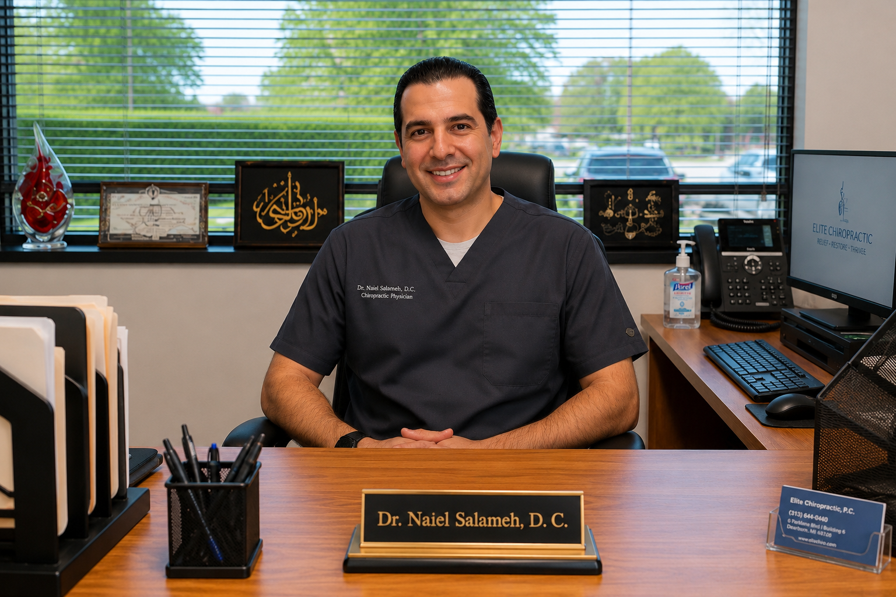
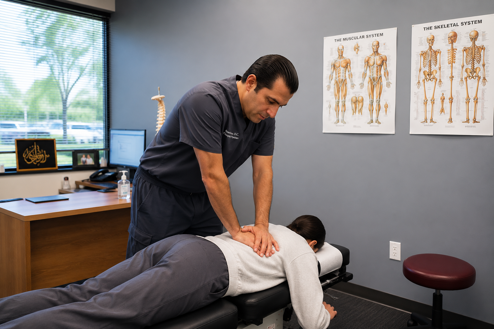

Meet The Doctor
Meet Dr. Naiel Salameh
Chiropractic Physician
Dr. Naiel Salameh provides patient-centered chiropractic care for auto accident injuries, sports injury recovery, back pain, neck pain, mobility concerns, and physical therapy support at Chiro One Sports & Spine Center in Dearborn.

Why Patients Trust Dr. Salameh
Experienced, Patient-Focused Care Since 2002.
Patients choose Dr. Naiel Salameh because of his commitment to personalized care, clear communication, and conservative treatment options designed to help people move better, recover properly, and improve their quality of life.
20+ Years Experience
Serving patients in Dearborn and surrounding communities since 2002 with a focus on chiropractic care, injury recovery, and long-term wellness.
Certified Chiropractic Sports Physician
Dr. Salameh brings a sports medicine perspective to chiropractic care, rehabilitation, athletic injury recovery, and active lifestyle support.
Patient-Centered Approach
Every care plan is built around the patient’s symptoms, goals, comfort level, and recovery needs.
Comprehensive Injury Care
Support for auto accidents, sports injuries, back pain, neck pain, whiplash symptoms, headaches, and mobility concerns.
Provider Profile
Focused On Recovery, Movement & Long-Term Wellness.
Dr. Naiel Salameh works with patients seeking conservative care for pain, injury recovery, mobility limitations, and overall wellness. His approach focuses on understanding each patient’s symptoms, identifying contributing factors, and building care around the patient’s goals.
At Chiro One Sports & Spine Center, care may include chiropractic treatment, rehabilitation support, physical therapy integration, mobility work, and recovery-focused treatment planning.
- Auto accident injury care
- Whiplash, back pain, and neck pain support
- Sports injury recovery
- Physical therapy and rehabilitation support
- Personalized care plans
Chiro One Sports & Spine Center
A Dearborn chiropractic office focused on helping patients recover from pain, injury, stiffness, mobility issues, and activity-related limitations.
Office Information
6 Parklane Blvd Suite 100
Dearborn, Michigan 48126
Care Philosophy
High-Quality Care Built Around The Patient.
Dr. Salameh’s care philosophy centers on clear communication, individualized treatment, and helping patients move better, recover properly, and feel confident in their care plan.
Conservative Chiropractic Care
Focused on non-invasive care designed to support movement, function, mobility, and long-term wellness.
Auto Accident Injury Support
Care for patients dealing with pain, stiffness, headaches, whiplash symptoms, and mobility issues after a collision.
Sports Recovery Focus
Support for athletes and active patients working to recover from pain, movement limitations, injury, and performance setbacks.
Rehabilitation Integration
Physical therapy and rehabilitation support may be incorporated to help improve strength, mobility, and function.

Treatment Approach
Hands-On Care For Pain, Injury Recovery & Mobility.
Chiropractic care is not one-size-fits-all. Dr. Salameh evaluates each patient’s condition and works to provide care that supports recovery, movement, and long-term health.
- Evaluation of symptoms and movement limitations
- Care for accident-related discomfort
- Support for back pain and neck pain
- Rehabilitation and mobility-based care
- Clear next steps for patients
Conditions & Services
Areas Of Care
Auto Accident Injuries
Care for whiplash, neck pain, back pain, headaches, stiffness, and accident-related discomfort.
Sports Injury Recovery
Support for athletes and active patients dealing with injury, pain, stiffness, and mobility limitations.
Chiropractic Care
Conservative chiropractic care focused on movement, function, alignment, and wellness.
Physical Therapy
Rehabilitation support to improve strength, function, mobility, and recovery.
Back Pain Treatment
Care for lower back pain, stiffness, and activity-related discomfort.
Neck Pain Treatment
Support for neck stiffness, tension, headaches, and reduced range of motion.
Request Care
Schedule With Chiro One Sports & Spine Center
Request appointment availability and our office will follow up with next steps.